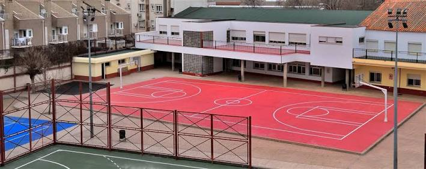

Parque Nicolás Fúster
Pulmón verde de la zona oeste, ideal para pasear, hacer deporte y disfrutar de sus lagos.
Ver más

Parroquia de San José
Puntos de interés religioso y social muy vinculados a la vida cotidiana de los vecinos.
Ver más
Colegio Nuestra Señora de la Providencia
centro educativo religioso concertado de la congregación de las Religiosas Teatinas de la Inmaculada Concepción
Ver más
CENTRO NEURÁLGICO
Parque Fúster
Extensa zona verde con lagos y ocio
ÁREA RESIDENCIAL
Zona Oeste
Situado junto al barrio de La Cristina
EQUIPAMIENTO
Zonas Infantiles
Áreas de juego y parques biosaludables
MOVILIDAD
Junto a la Renfe
A pocos minutos a pie de la estación C-3